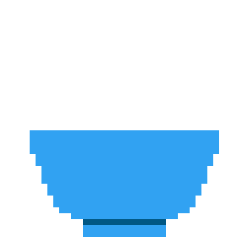

<ion-content padding>
  <div class="content">
    <div class="title">
      <h2>Making Rice</h2>
      <h2 [hidden]="dots < 1">.</h2>
      <h2 [hidden]="dots < 2">.</h2>
      <h2 [hidden]="dots < 3">.</h2>
    </div>
    <h2>~{{remainingTime}} minutes</h2>
    
  </div>
</ion-content>
